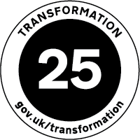
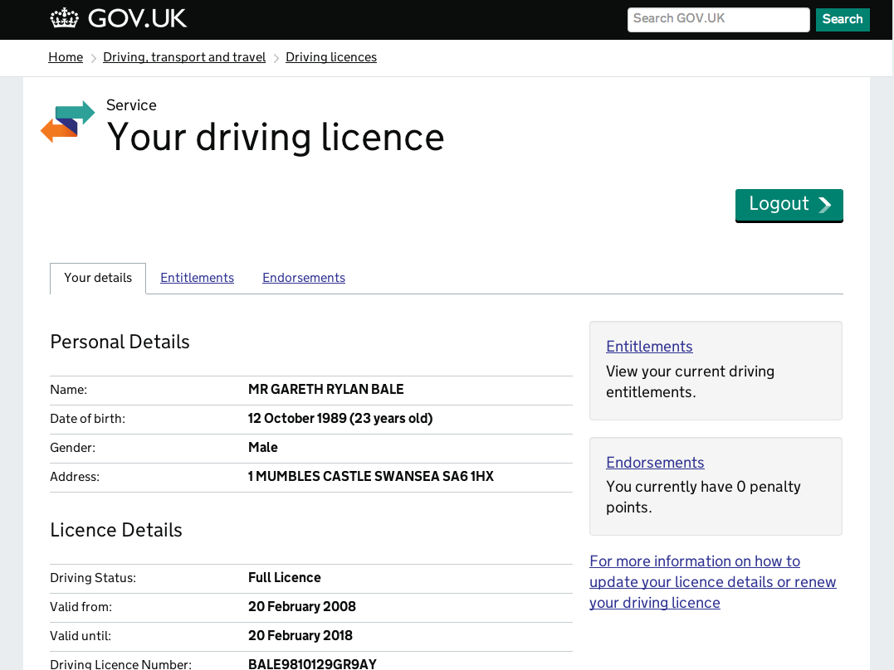

<div id="wrapper" class="transaction-dashboard transaction-single">
  <main id="content" role="main" class="group">
    <article class="group">
      <header class="page-header group">
        <div class="hgroup">
          <h1>
            <span>Transformation update</span>
            View driving record
          </h1>
        </div>

        <div class="organisations">
          <div class="department-for-transport">
            <span class="organisation-logo organisation-logo-single-identity organisation-logo-single-identity-medium">
              <span>Department for Transport</span>
            </span>
          </div>

          <div class="dvla">
            <span class="agency-logo">Driving and Vehicle Licensing Agency</span>
          </div>
        </div>

      </header>

      <div class="body">
        <div>
          <a href="/transformation" class="transformation-logo"></a>

          <p>This page will keep you up to date on the progress of the 9th exemplar in our <a href="/transformation">Transformation programme</a> – View driving record.</p>

          <p>Right now it contains our <a href="#digital-strategy">original strategy statement</a> for the exemplar, the <a href="#business-case">business case</a> we've developed during the discovery phase of the programme, a quick description of <a href="#benefits">the benefits we aim to deliver to users</a> and other useful background information – as available.</p>

          <p>As the programme continues you'll be able to see progress reflected here and the information will become richer – there'll be links to the programme blog, screenshots of software in development and more and better data as we learn more about the delivery of the service.</p>
        </div>

        <div class="group">
          <h2 id="#screenshots">Screenshots</h2>

          <div class="screengrab">
            
            <p>Service doesn't currently exist digitally</p>
          </div>

          <div class="screengrab">
            
            <p>Beta of driving licence online</p>
          </div>
        </div>

        <div class="digital-strategy">
          <h2 id="digital-strategy">Digital strategy statement</h2>

          <blockquote>
            A new enquiry service to provide motor insurance industry and driver enquiry services, all delivered through a ‘greenfield’ IT procurement approach developed jointly with the GDS. This will see a move away from expensive legacy ICT systems, using an innovative ‘agile’ approach to designing services and platforms.
          </blockquote>

          <p>From the <cite><a href="https://www.gov.uk/government/publications/department-for-transport-digital-strategy">Department for Transport digital strategy</a></cite> – December 2012</p>

        </div>

        <div>
          <h2 id="benefits">Benefits for users</h2>

          <p>If you are a driver you will be able to view information from your record, including what vehicles you can drive and any penalty points and disqualifications. Driver's data will be made available via a new DVLA enquiry platform built to handle high-volume enquiries.</p>
        </div>

        <div>
          <h2 id="business-case">Business case</h2>

          <p>Motor insurers will access DVLA data on penalty points and what vehicles users are allowed to drive to check insurance applications and cut honest drivers’ premiums, thus implementing Financial Services Authority requirements. Drivers will be able to check their personal data through a portal.</p>

          <p>Phase 2: Possible data access for car hire companies, police and other European governments.</p>

          <ul>
            <li>Unquantified but large saving to motorists (market worth >£9bn/yr)</li>
            <li>Worth up to £300m p.a. to insurers</li>
            <li>Phase 2 reduces current high costs to maintain data quality</li>
            <li>Better road safety as high risk drivers pay more</li>
          </ul>
        </div>
      </div>

      <aside>
        <div>
          <h3>Exemplar number</h3>
          <div class="big-number">9</div>
        </div>

        <div>
          <h3>Service phase</h3>
          <a href="https://www.gov.uk/service-manual/phases/beta" class="current-phase beta">BETA</a>

          <p>Learn more <a href="https://www.gov.uk/service-manual/phases/beta">about the beta phase</a></p>
        </div>

        <div>
          <h3>Volume of users</h3>

          <div class="big-number">
            500m
            <span>Insurers (hits / year)</span>
          </div>

          <div class="big-number">
            6m
            <span>Drivers (forecast)</span>
          </div>
        </div>
      </aside>
    </article>
  </main>
</div>